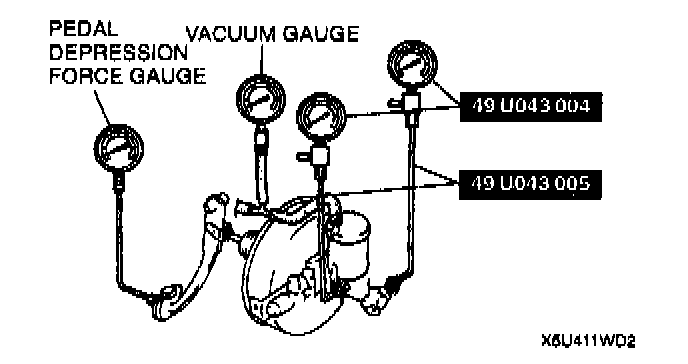
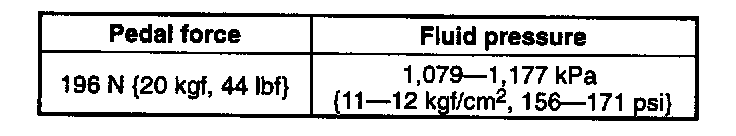
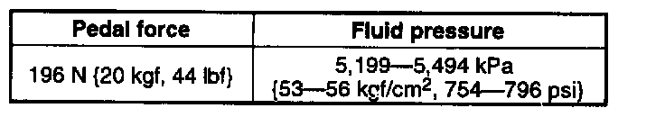

Vacuum Brake Booster: Testing and Inspection
POWER BRAKE UNIT FUNCTION INSPECTION (SIMPLE METHOD)Step 1
1. With the engine stopped, depress the pedal a few times.
2. With the pedal depressed, start the engine.
3. If the pedal moves down slightly immediately after the engine starts, the unit is operating.
Step 2
1. Start the engine and let it run for 1 or 2 minutes.
2. Stop the engine.
3. Depress the pedal with the usual force.
4. If the first pedal stroke is long and becomes shorter with subsequent strokes, the unit is operating.
5. If a problem is found, inspect for damage or improper connection of the check valve or vacuum hose. Repair as necessary and inspect it once again.
Step 3
1. Start the engine.
2. Depress the pedal with the usual force.
3. Stop the engine with the pedal depressed.
4. Hold the pedal down for about 30 seconds.
5. If the pedal height does not change, the unit is operating.
6. If there is a problem, inspect for damage or improper connection of the check valve or vacuum hose. Repair as necessary and inspect once again.
7. If the nature of the problem is still not clear after following the 3 steps above, follow the more detailed inspect described in "Inspection Using Gauges", below.
POWER BRAKE UNIT FUNCTION INSPECTION (INSPECTION USING GAUGES)

^ Connect the Special Service Tool (SST) gauges, a vacuum gauge, and a pedal depression gauge as shown. Bleed the air from the SST gauges before performing the following tests.
INSPECTION FOR VACUUM LOSS (UNLOADED CONDITION)
1. Start the engine.
2. Stop the engine when the vacuum gauge indicates 66.7 kPa (500 mm-Hg, 19.7 in-Hg).
3. Observe the vacuum gauge for 15 seconds. If the gauge indicates 63.4-66.6 kPa (475-500 mm-Hg, 18.7-19.7 in-Hg), the unit is operating.
INSPECTION FOR VACUUM LOSS (LOADED CONDITION)
1. Start the engine.
2. Depress the brake pedal with a force of 196 N (20 kgf, 44 lbs.).
3. With the brake pedal depressed, stop the engine when the vacuum gauge indicates 66.7 kPa (500 mm-Hg, 19.7 in-Hg).
4. Observe the vacuum gauge for 15 seconds. If the gauge indicates 63.4-66.6 kPa (475-500 mm-Hg, 18.7-19.7 in-Hg), the unit is operating.
INSPECTION FOR HYDRAULIC PRESSURE

1. If with the engine stopped (vacuum 0 kPa (0 mm-Hg, 0 in-Hg)) the fluid pressure is within specification, the unit is operating.

2. Start the engine. Depress the brake pedal when the vacuum reaches 66.7 kPa (500 mm-Hg, 19.7 in-Hg). If the fluid pressure is within specification, the unit is operating.